Analiza rješenja · JOI Spring Camp 2026 · Dan 2
Teleporter 2
O ovom članku
Tekst je prijevod službene japanske prezentacije rješenja, preoblikovan u članak. Slajdovi su ugrađeni kao slike; natpis pod svakim slajdom je prijevod teksta na njemu. Dijelovi označeni kao trenerska napomena nisu u izvornoj prezentaciji — dodani su da popune korake koje slajdovi preskaču ili samo skiciraju.
Slajdovi
Zadatak
izvorni slajdovi 1–4
-
1Naslov; blackyuki. -
2Podzadatak 0: pregled. -
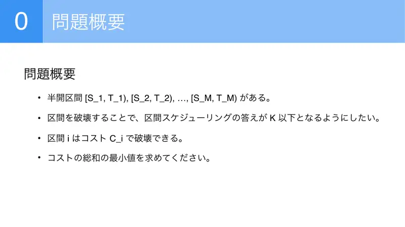
3Poluotvoreni intervali $[S_i,T_i)$; uništavanjem (trošak $C_i$) postići da je odgovor interval schedulinga $\le K$. -
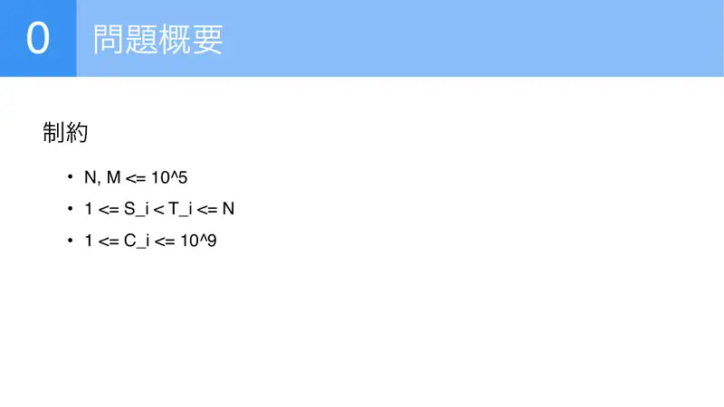
4$N,M\le10^5$, $C\le10^9$.
← → tipke ili klik na sliku
Mali podzadaci 37 bodova
Koraci algoritma
K=1, bitmaska, DP s dualnošću
izvorni slajdovi 5–15
-
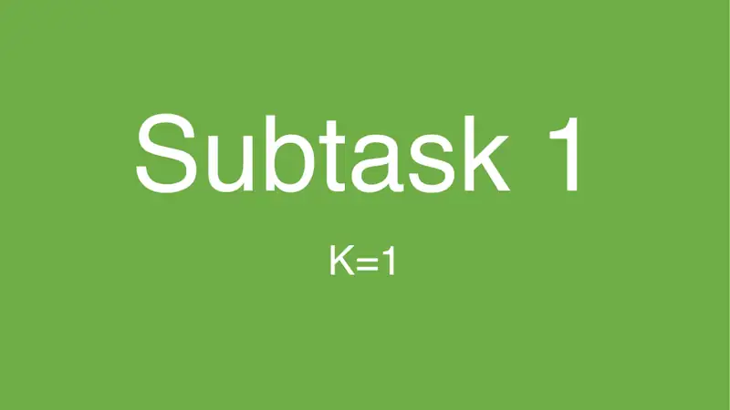
5Podzadatak 1: $K=1$. -
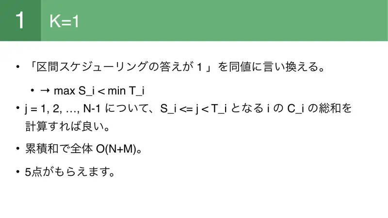
6„Odgovor 1” ⇔ $\max S_i\lt\min T_i$; za svaki $j$ zbroj $C_i$ sa $S_i\le j\lt T_i$ prefiksnim sumama; $O(N+M)$. -
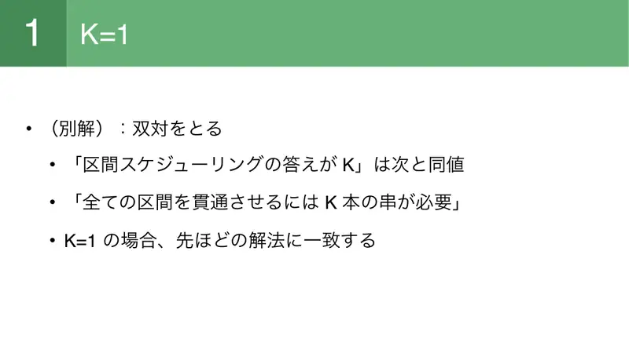
7Alternativa — dualnost: „odgovor $K$” ⇔ treba $K$ ražnjića da se probodu svi intervali; za $K=1$ isto rješenje. -
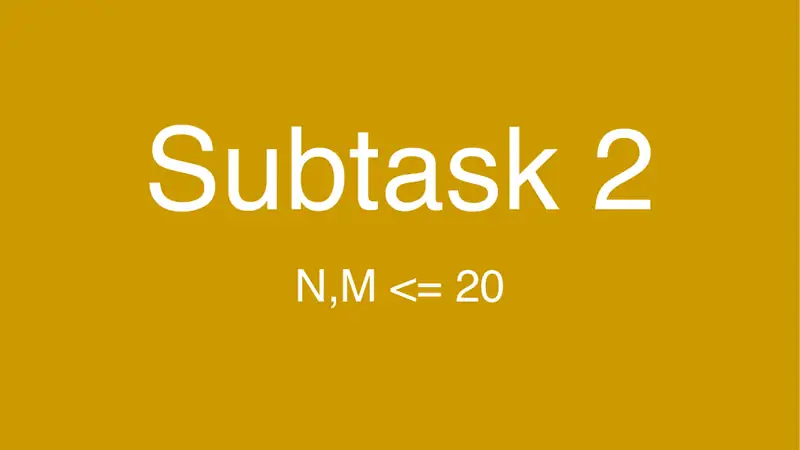
8Podzadatak 2. -
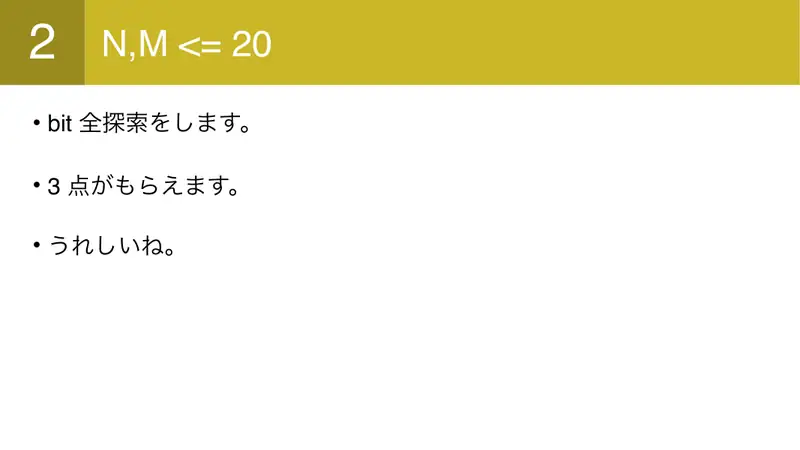
9Bitmaska; 3 boda. -
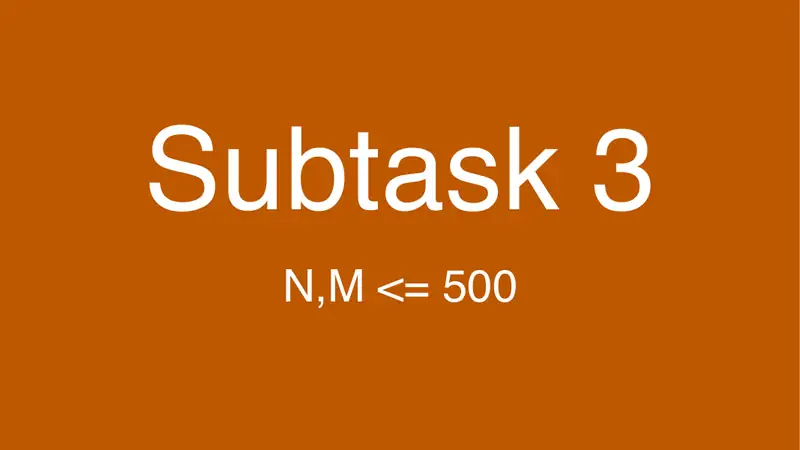
10Podzadatak 3. -
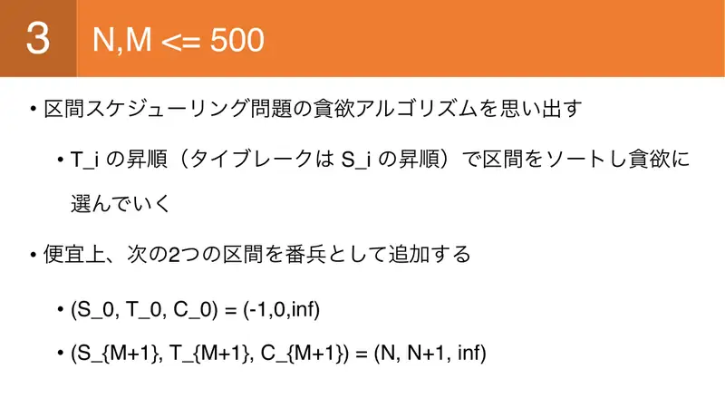
11Greedy interval schedulinga: sortiraj po $T$ (pa $S$); dodaj stražare $(-1,0,\infty)$ i $(N,N+1,\infty)$. -
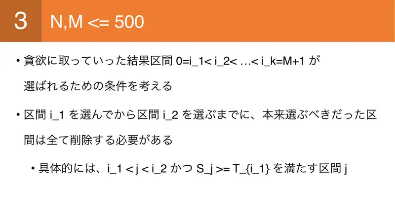
12Da greedy odabere $0=i_1\lt\dots\lt i_k=M+1$: između $i_1$ i $i_2$ obriši sve $j$ koje bi greedy uzeo — $i_1\lt j\lt i_2$ i $S_j\ge T_{i_1}$. -
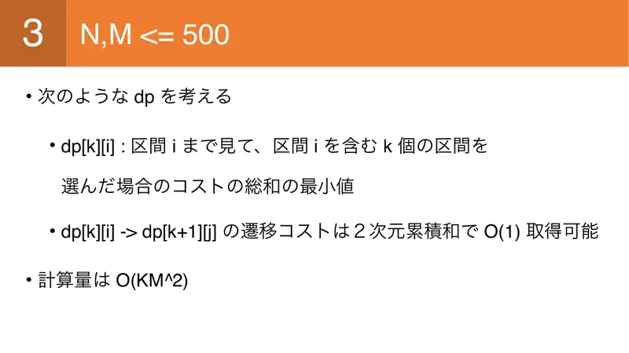
13$dp[k][i]$: gledano do $i$, odabrano $k$ intervala s $i$ zadnjim; prijelaz 2D prefiksima $O(1)$; $O(KM^2)$. -
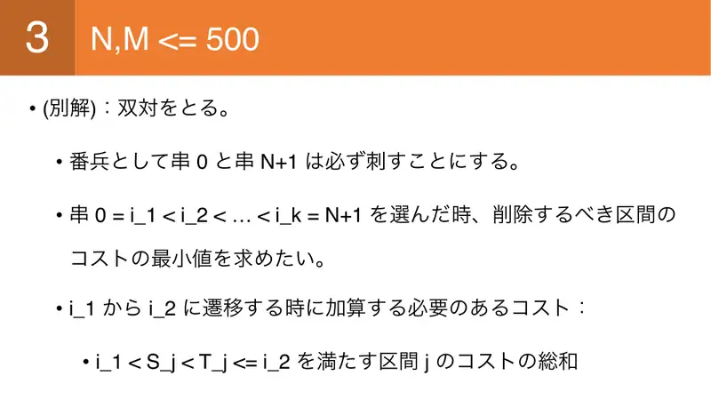
14Dualno: ražnjići $0$ i $N+1$ fiksni; za $0=i_1\lt\dots\lt i_k=N+1$ trošak prijelaza $i_1\to i_2$ = $\sum C_j$ za $i_1\lt S_j\lt T_j\le i_2$. -
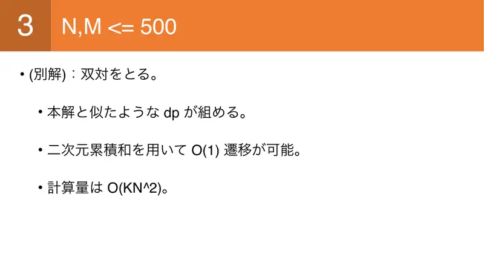
15Sličan DP, 2D prefiksi, $O(KN^2)$.
← → tipke ili klik na sliku
Monge 60 bodova
Koraci algoritma
Monotone minima
izvorni slajdovi 16–22
-
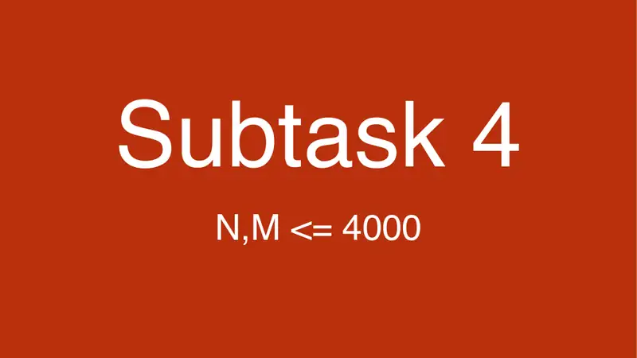
16Podzadatak 4. -
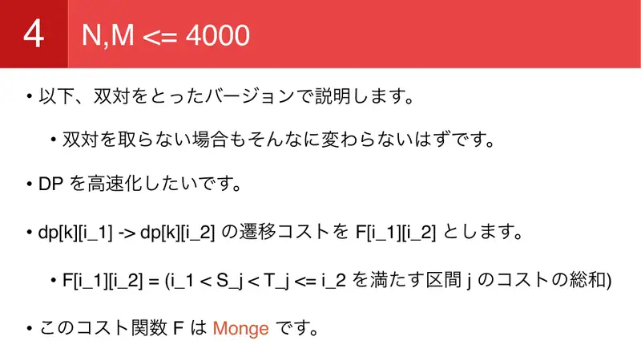
17Dualna verzija; $F[i_1][i_2]$ = zbroj troškova intervala strogo između — Monge. -
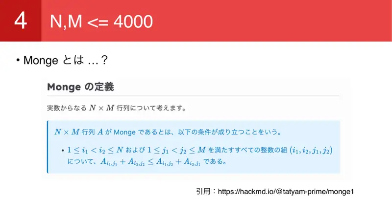
18Definicija Monge (tatyam). -
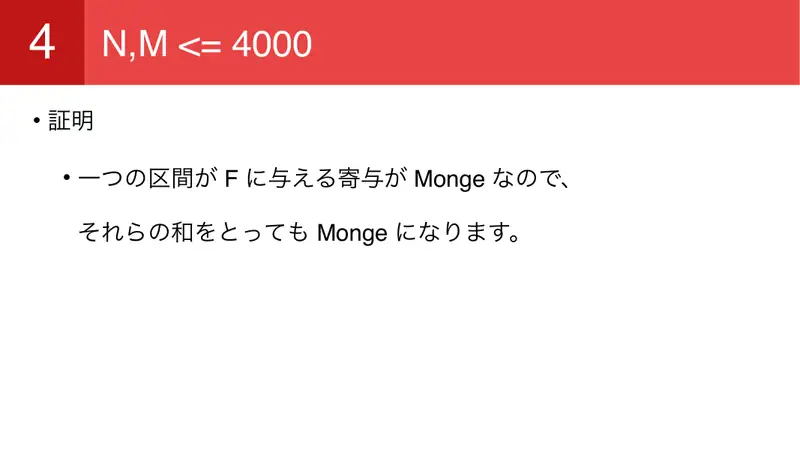
19Dokaz: doprinos jednog intervala je Monge, zbroj Monge funkcija je Monge. -
20Ubrzanje DP-a Monge svojstvom (JOISC 2023 chorus). -
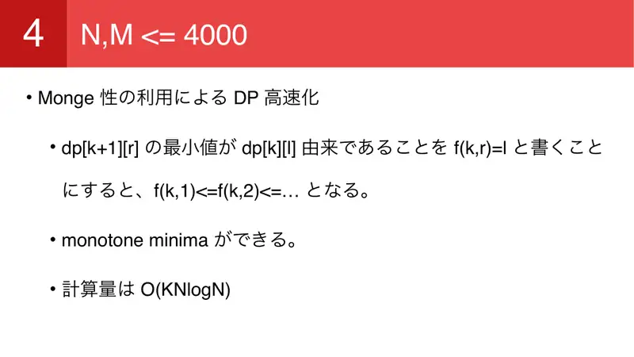
21$f(k,r)$ = optimalni $l$ za $dp[k+1][r]$ neopadajući u $r$ ⇒ monotone minima; $O(KN\log N)$. -
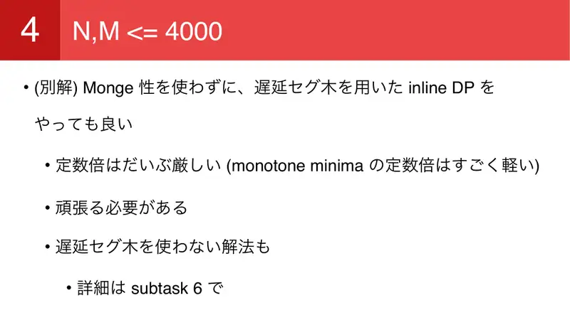
22Alternativa: inline DP s lijenim segmentnim stablom (teška konstanta); moguće i bez lijenog — vidi podzadatak 6.
← → tipke ili klik na sliku
Aliens 100 bodova
Koraci algoritma
Lagrangeova relaksacija
izvorni slajdovi 23–29
-
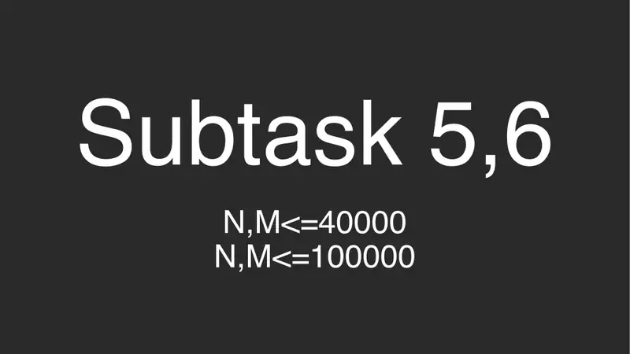
23Podzadaci 5–6. -
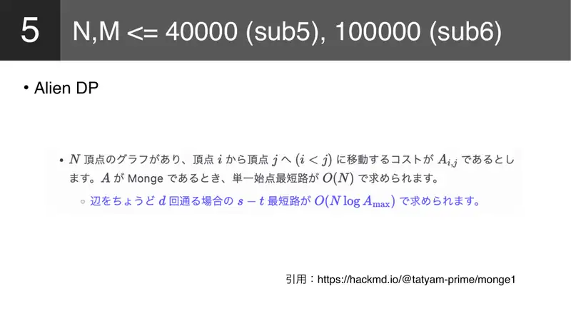
24Alien DP (tatyam). -
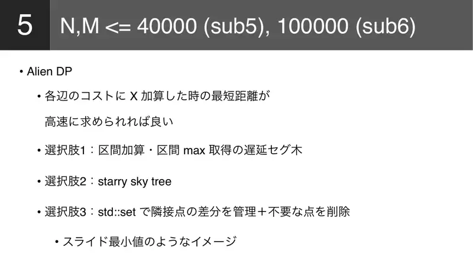
25Dodaj $X$ na svaki brid i računaj najkraći put brzo: (1) lijeno stablo dodaj-na-interval/max, (2) starry sky tree, (3) std::setrazlika susjednih točaka s brisanjem nepotrebnih (kao klizni minimum). -
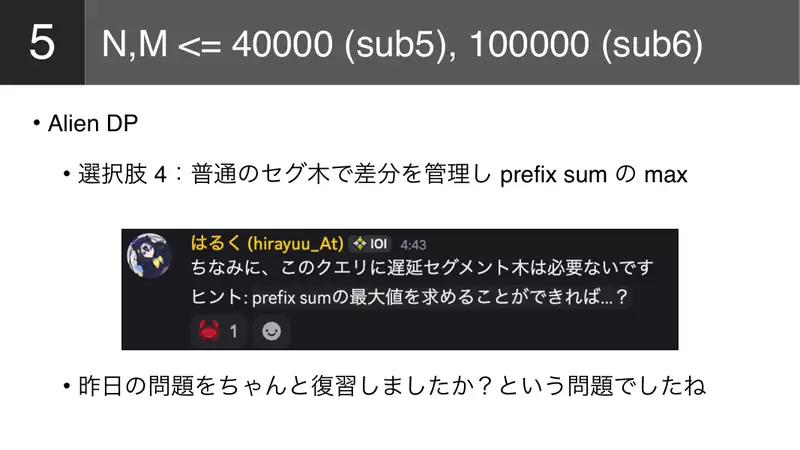
26(4) običan segment nad razlikama i max prefiksne sume — „jeste li ponovili jučerašnji zadatak?” -
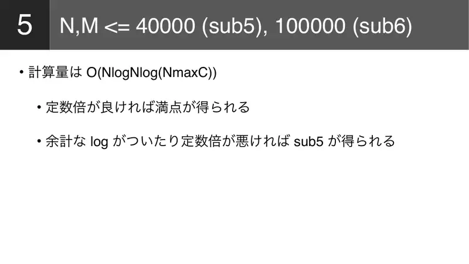
27$O(N\log N\log(N\max C))$; s dobrom konstantom 100, inače podzadatak 5. -
28Raspodjela bodova. -
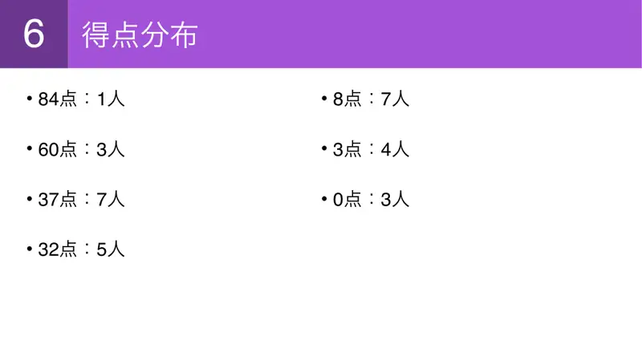
2984: 1, 60: 3, 37: 7, 32: 5, 8: 7, 3: 4, 0: 3.
← → tipke ili klik na sliku
Sažetak
- Dualnost: umjesto ograničiti disjunktne intervale, odaberi $K$ probadajućih točaka i plati sve između susjednih.
- Cijena je Monge ⇒ monotone minima; konveksnost po $K$ ⇒ Aliens s lijenim segmentnim stablom.